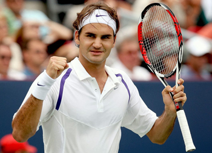

Previous: Self Belief | 🏠 Mental Game Home | Next: Should We Ban Players for Recreational Drugs?
Self-Acceptance and Confidence
Comprehensive unified tennis knowledge base — Fundamentals, Stroke Analysis, Reference Library, and more
Self-Acceptance and Confidence
Ben Loeb
The sports psychology principles I have developed have helped my high school teams win 17 state titles—so far.
The boys' and girls' high school tennis teams I have coached have had thirty-eight final four appearances and won seventeen state titles--and counting. The successes of these teams have come in part by the application of concepts and techniques I developed to systematically explore and improve the mental and emotional elements in my players' development.
The origin of this work is grounded in my own experiences as a player. Back in the early 1970s through the mid-1980s, when I was a teenager and into my twenties, I played in many summer tennis tournaments at the Dwight Davis Tennis Center in Forest Park in St. Louis, Missouri.
I used to practice so hard in preparation for these tournaments. But then, during the tournaments, I'd find myself getting in my own way more often than I'd like. I would get nervous and worry about the outcome before each match, and I knew it was because I was afraid of failure. I believe this fear of failure stemmed from my not being confident that I could win the match.
I was a comparer. Often, I'd know the opponent's ability level before the match and predetermine who was likely to win. If the outcome was in doubt near the end of the match, my pecking order mentality too often affected the match outcome.
The origin of my work lies in my own experience as a player.
My mother, who was not sports oriented, gave me the best advice I've ever heard. Before I'd leave the house to go to the tennis tournament, she would always say, "Relax and have fun."
Simple Advice
It was such simple advice. At the time I thought the "have fun" part was naive. I was not out there flying kites or recreationally throwing horseshoes; I was experiencing a clash in my head between wanting to win and being afraid of losing.
But, over time, I came to interpret my mother's message: True competitors have fun competing. True competitors look at the situation as a challenge and find fun in that challenge. Yes, they take it seriously, but there is also the element of thrill in the competition.
Common obstacles for athletes include fear of failure (probably the world champion of obstacles), fear of success, perfectionism, and maintaining emotional control. I have experienced each of these obstacles in competitive play.
The most common obstacle for me was spending too much time fighting myself and not maintaining control of my emotions. This personal experience ignited my passion to find a better psychological way to perform at a higher level and to actually embrace the competitive arena. It drove me to explore sport psychology for myself and to help other athletes minimize the pitfalls that I had experienced.
In 30 years I have worked with hundreds of players on overcoming mental and emotional obstacles.
During my over thirty years of coaching tennis teams, I have helped players overcome each of these obstacles and more during competition. My belief is that most coaches want something they can use with their team that can complement practice time.
This article series is based on my book Next Gen-Coaching, which presents a detailed series of practical, hands on exercises and self-assessments. These articles present my underlying understanding of the problems faced by most players, and their solutions.
If these articles speak to you as a player or a coach, then I encourage to you to take the next step by going through the assessments and exercises for yourself. I believe they are powerful tools for making real changes in your competitive results.
These are for any athlete to use on their own or for coaches to use with their athletes in order to improve the mental and emotional side of their games. But let's start by outlining what I think are some of the meta issues involved. Let's start with self-acceptance and confidence.
Conditional or Unconditional Self-Acceptance
Do you accept yourself conditionally or unconditionally in competitive athletics? If it's conditionally then your confidence and mental toughness is likely to drop when you face adversity. You are likely to have a psychological tug-of-war with fear undermining your ability to stay connected to yourself. Fear and frustration is normal at times and it's a matter of how the athlete will deal with it.
Accepting yourself sets you free.
Accept your own vulnerability without resistance and then take confident and positive action anyway. Conditional acceptance will lead to lower confidence in sport, lower mental toughness, and lower self-esteem overall.
Unconditional acceptance of self will enable the athlete to separate their sport performance from how they view themselves as a person. It will enable the athlete to be okay in a global sense in spite of the disappointment of sub-par performance or a tough loss.
Winning is hard to do. Losing is hard to take. But unconditional acceptance can set the athlete free for greater objective self-reflection without beating yourself up. It allows the athlete to contemplate the root cause of their performance anxiety. Unconditional acceptance is freedom. It sets you free to invest again without reservation or fear of the outcome.
Have you ever watched a match where it was clear one player was superior to the other? I remember watching an Olympics boxing match where it was clear which boxer was going be the winner and likely a medalist and which one wasn't going anywhere near the podium. And yet, the other guy kept coming back. He kept punching. While he ultimately lost the match, in my view he left that ring a hero. He fought until the end.
How did he manage in the face of such odds? Confidence. Confidence is the firm belief in your ability to overcome the obstacles before you. It's the belief that you have the ability to execute a task successfully and win. Confidence is a sureness that you can do it. Confidence is the single most important mental factor in sport success. Are you, the athlete, your own worst enemy by being full of self-doubt? Or are you your best ally by having genuine confidence?
Confidence Challenge
It's easy to stay confident when you're performing well, when the conditions are ideal, and when you're competing against someone you're better than. The real test of confidence, however, is how you respond when things aren't going your way.

Genuine confidence is a sureness you can do it.
Dr. Jim Taylor, an authority on the psychology of performance in business, sport, and parenting, calls this the confidence challenge. He explains that what separates the best athletes from the rest is that the best are able to maintain their confidence when they're not at the top of their games.
By staying confident, they continue to work hard instead of giving up, because they know that their performance will come around in time. Consider the confidence (and perseverance) of teams in professional basketball, baseball, or hockey that have trailed 3 games to 1 in a best 4 of 7 game series and have come back to win. Maintaining confidence is a factor in these teams' abilities to win the overall series.
Most athletes who perform poorly get caught in the vicious cycle of low confidence and low performance. Low performance leads to low confidence, which leads to a continuation of low performance and low confidence. Once you slip into that downward spiral, you rarely can get out of it in the short term. It's not fun and it's tough to get off that merry-go-round.
In contrast, athletes with confidence can ride out the downward flows of the game and seek out ways to return to their previous level. Confidence is a deep, lasting, and resilient belief in one's ability. All athletes will go through periods when they don't perform well. The skill is not getting caught in the vicious cycle and being able to get out of the down periods quickly.
There are several keys to mastering the confidence challenge. First, develop the attitude that demanding situations are challenges that should be sought out.
When it comes to your confidence level, round up!
Second, believe that experiencing challenges is a necessary part of becoming the best athlete you can. Third, be prepared to meet challenges. Fourth, stay positive and motivated in the face of difficulties and focus on what you need to do to overcome challenges. And finally, accept that you may experience failure when faced with new challenges but never give up.
Developing Confidence
Confidence can be a difficult attribute to attain. Many athletes and non-athletes struggle with having genuine confidence, especially when they need it most. Here are some ideas to help the not-so-confident.
Remember back in school you were taught in math class to "round up" on decimals? For example, 89.5 percent would round up to 90.0 percent--the nearest whole number.
You can apply the same principle with your confidence level. Round up in your self-assessment to think you can do it in a competitive situation. If you have a realistic chance, instead of focusing on how you have an 85 percent confidence level, round up. Think, I can. Give yourself a 90 percent rating or higher. When do this you are using what's called realistic positive conviction.
Ben Loeb has been the varsity tennis coach for the boys' and girls' teams at Rock Bridge High School in Columbia, Missouri for over 30 years. His teams have won more than 1000 dual matches, made 38 appearances in the final four of the state team championships, and won 17 state titles. Been also teaches a high school sports psychology class and has used the principles he has developed to help hundreds of players to overcome the mental and emotional challenges of playing winning competitive tennis.

Next-Level Coaching!
Ben's new book, Next-Level Coaching, outlines the principles he has developed over his career as a player and a championship coach to help overcome the mental and emotional challenges of playing and enjoying competitive tennis. It includes detailed self-assessment questionnaires and plans of action to help any player our coach use sports psychology to reach the next level.
To Order Next-Level Coaching, Click Here!
Source: tennisplayer.net archive — Self-Acceptance and Confidence.docx (John Yandell teaching library, 2002-2022). Extracted and rendered as HTML for Tennis Future Lab.